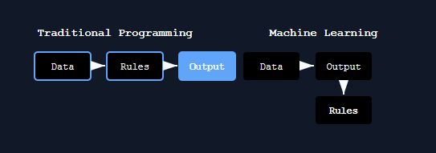

Machine learning is a subset of artificial intelligence where computers learn patterns from data instead of being explicitly programmed. Traditional programming requires writing rules for every scenario. Machine learning flips this: you provide data and expected outputs and the algorithm figures out the rules.
This matters because many problems are too complex for hand-coded rules. Recognizing faces, translating languages, detecting fraud - these tasks have too many variables to define manually.

How machine learning differs from traditional programming
Core Concepts
- Training data: The historical examples the algorithm learns from
- Features: Input variables used to make predictions (age, income, location)
- Labels: The target variable you want to predict (price, category, yes/no)
- Model: The mathematical representation learned from data
- Inference: Using the trained model to make predictions on new data
Three Main Types of Machine Learning
Supervised Learning
Training data includes labels. The algorithm learns to map inputs to known outputs.
Examples: spam detection, price prediction
Unsupervised Learning
No labels provided. The algorithm finds hidden patterns or groupings.
Examples: customer segmentation, anomaly detection
Reinforcement Learning
An agent learns by taking actions and receiving rewards or penalties.
Examples: game playing, robotics
A Practical Analogy
- Supervised learning is like studying with an answer key
- Unsupervised learning is like sorting a pile of unlabeled photos into groups
- Reinforcement learning is like learning to ride a bike through trial and error
Common Use Cases
Machine learning powers many modern applications:
- Recommendation systems
- Image classification
- Natural language processing
- Predictive maintenance
- Medical diagnosis
Limitations
ML models have important limitations to consider:
- They need substantial quality data
- They can inherit biases present in training data
- They struggle with edge cases not represented in training
- Models often lack interpretability - they predict outcomes but don't explain reasoning